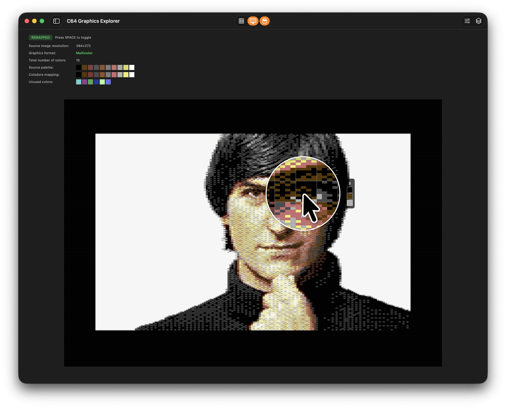
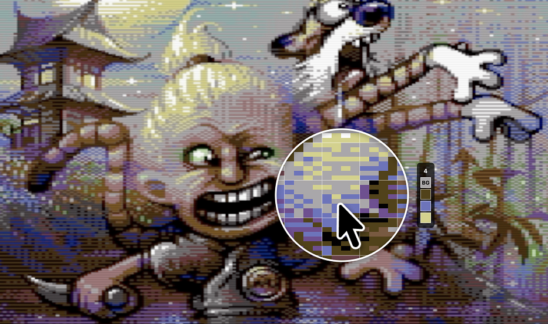

Authentic CRT simulation and pixel inspection tool for enjoying artwork made for the Commodore 64.

Requires macOS Sequoia 15.0+ and Apple Silicon, sample images included
This app lets you explore the modern Commodore 64 art scene and see how artists are still pushing the limits of this 43-year-old platform.
Pick an image from the curated gallery and see how it was made — character blocks, sprite layers, all of it rendered through an authentic CRT simulation.
You can also bring your own images. Drag and drop them in and the app will map them to the Colodore palette.
Modern pieces often leave you wondering: how the hell did they get away with these impossible limits?
That's the correct mindset.

There is an inherent beauty in the pixel graphics of the Commodore 64.
The original, somewhat washed-out color set emerged from a small team working on the VIC chip: with direct control over hue, saturation, and luminance, the colors were chosen largely by instinct.
These colors, combined with the strict limitations on how they could be used gave rise to an entire era of artists who hadn't stopped in the early '90's when the Commodore 64 begun to fade.
These limits became a new norm, a canonical part of life for those who grew up with this 8-bit platform producing not only pixel art, but code and music.
Curated collection of C64 artwork that showcases some of the very best this platform has to offer. We even have support for interlaced and multi screen images (only in the sample sidebar for now). Explore c64gfx.com to get more images to test with.
Pepto's Colodore filter with scanlines, Hanover bars, chroma subsampling, and configurable gamma. It's very close to the VICE emulation experience and you can even tweak it to your liking.
Magnifying loupe with 8×8 character grid overlay. Reveals the exact colors in each character block. The app uses simple heuristics to detect the global background color and highlight it in the loupe.
Automatically detects Hires (2 colors per block), Multicolor (up to 4 colors per block where one is the global background), and even Hires Multicolor (interlace) modes.
For your own images it automatically finds the best match to the real C64's 16 colors. If we fail to identify, you can manually reassign colors.
For images with borders you don't need a graphics tool to fix improper placement, just align the grid manually over the 320×200 area using cursor keys.